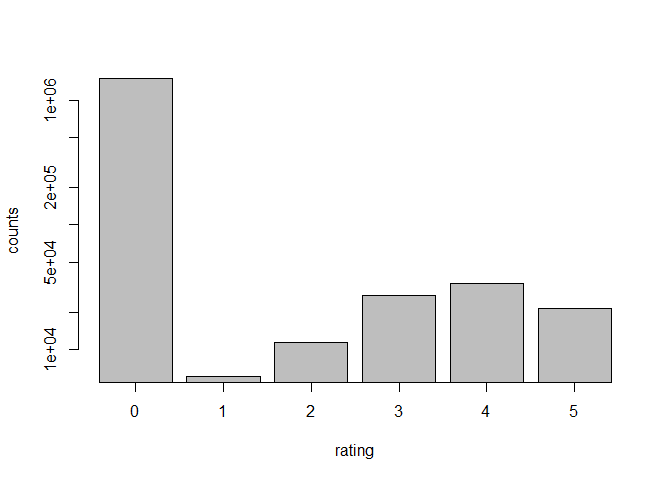
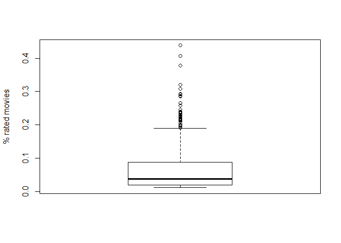
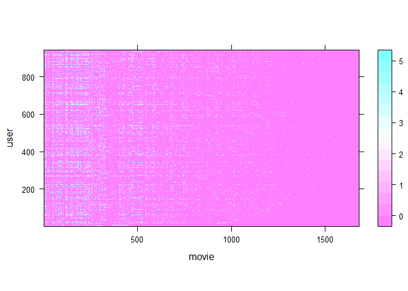
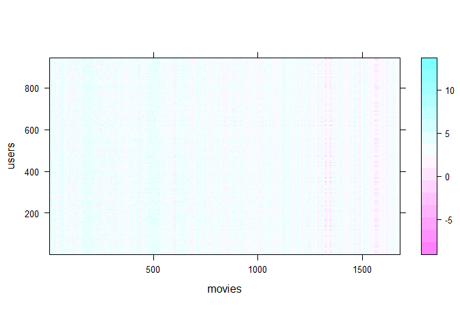

second try
What is a Recommender System?
Nowadays, many of us interact with recommender systems on a daily basis. If you have an account in Amazon or Netflix or many similar online services, you may have recieved suggestions that often fit your interest. This can vary from a movie suggested by Netflix or very various products suggested by Amazon. The targeted advertisements on Facebook or tergeted pop-up advertisements in your browser are also other applications of recommender systems. Almost no two person recieves the exact same advertisements or suggestions on an online platforms. All these personalized suggestions and advertistments use recommender systems to find the best match for your interests according to your former ratings, purchases and/or clicks.
In this report we want to solve a problem simmilar to what Netflix has. We assume that we have nm movies and nu users who rated a small subset of the movies. The goal is to figure out what kind of rating the users would give to the movies that they did not watch yet. The ultimate goal is to find out which user likes which movie the best, then we can suggest it to him/her. In other words we like to fill the cells with ? with reasonable numbers.
First, we talk brifely about content-based recommender systems and then a colloborative filtering method. Finally we implement a Collaborative filtering recommender system.
Content-based Recommender System
Imagine that we have two important features like drama and action for each movie. For example, we know that movie 1 is mostly drama and no action but movie 2 has a lot of action and no drama. Movie three has action and drama both and so on. We can show this information about each movie with a eature verctor for each movie. x(i) is showing the feature weights fot the i-th movie. For example, $x^{(1)}=\begin{bmatrix}5\\0\end{bmatrix}$, $x^{(2)}=\begin{bmatrix}0\\4\end{bmatrix}$ and $x^{(3)}=\begin{bmatrix}2\\3\end{bmatrix}$. Assuming that the first element in x(i) is the weight of drama feature and the second weight is the action feature.
Each user has different interest in different types of movies some may only like drama and really dislike action, some may get really bored with drama and only go for action movies and some like me prefer movies which have drama and action both. This means that we can also define a feature vector θ(j) for each user but we do not know the weights. It means we do not know what are the preferences of the j-th user more action or more drama? So we need to learn these weights. But how? with the help of their ratings. If we track the users rating we can see if he/she gave higher points to drama movies or action movie or movies which have both. Basically we want to finf the θ(j) feature vector in a way that (θ(j))Tx(i) is the similar to the rating of the j-th user for the i-th movie y(i, j). We want to this not only for one movie and one user but for all nm movies and nu movies. Therefore, we try to minimize the sum of the squared error for all rated movies.
where r(i, j)=1 is true if the user i rated the movie j. This means we summ over the rated ones and skip the holes of the matrix Y.
Collaborative Filtering
Content-based recommendation is staright forward and easy to implement but it requires us knowing the features of all movies. This is often not possible. Since there are much more important features than the two we have mentioned before. Furthermore, there is no easy way to find the right weights for a large pool of movies. Therefore, in a real-world applcaition we often cannot perform a content-based recommendation.
Let’s assume that there are nf important features (wihtout knowing what these features are). If we have asked all the users to give some weights for these features and we could fill the Θ matrix which is a nu x nf matrix then we could find the weight matrix of the movies : X
by minimzing the following optimization problem:
\begin{} *{x^{(i)}} *{j:r(i,j)=1} (({(j)})T x{(i)}-y{(i,j)})^2 $$
Now that we have X, we can find Θ by solving the following optimization problem:
This means that we can start with some random feature matrices Θ and X and iteratively improve them. Θ − >X − >Θ − >X − >⋯
Or we can minimize the following function at once:
Programming a Simple Recommender System
As always we start with loading the data. We use a dataset constaining 943 users and 1682 movies. Since the dataset in provided in mat format we first load the R.matlab library
library('R.matlab')
## R.matlab v3.6.1 (2016-10-19) successfully loaded. See ?R.matlab for help.
##
## Attaching package: 'R.matlab'
## The following objects are masked from 'package:base':
##
## getOption, isOpen
matlist<-readMat("ex8_movies.mat")
myR<-matlist$R
myY<-matlist$Y
print(sprintf("myR is a matrix of size %ix%i",dim(myR)[1],dim(myR)[2]))
## [1] "myR is a matrix of size 1682x943"
print(sprintf("myY is a matrix of size %ix%i",dim(myY)[1],dim(myY)[2]))
## [1] "myY is a matrix of size 1682x943"
The data is provided in the form of two matrices of size 1682 x 943, movie-user matrices . Matrix myR contains only 0 and 1. myRij*</sub> is zero when the *i*-th movie is not rated by the *j*-th user. Matrix myY contains the ratings. So *myY**i**j* is the rating of the *j*-th user for the *i*-th movie. If *my**Yi**j = 0, it means that the j-th user did not provide any rating for the i-th movie
Let’s take a look at the rating distribution
Countsy<-sapply(c(0:5),FUN=function(i)length(which(myY==i)))
countFrame<-data.frame(rating=c(0:5),count=Countsy)
mp<-barplot(countFrame$count, xlab="rating",ylab="counts",log="y")
axis(1,at=mp,labels=countFrame$rating)

What percentage of the movies are rated by each user?
RM<-apply(myR,2,FUN=function(x)sum(x)/length(x))
boxplot(RM,ylab="% rated movies")
 We can see that most of the users rated less than 10 percent of the movies, although there are very few users who rated up to 40 percent of the movies.
Averaged user-rating and the best movies
First we calculate the average rating for each movie and take a look at the summary.
tempY<-myY
tempY[tempY==0]<-NA
avg.rate<-apply(tempY,1,mean,na.rm=T)
sortedFrame<-data.frame(id=c(1:length(avg.rate)),rating=avg.rate)
summary(sortedFrame)
## id rating
## Min. : 1.0 Min. :1.000
## 1st Qu.: 421.2 1st Qu.:2.660
## Median : 841.5 Median :3.162
## Mean : 841.5 Mean :3.076
## 3rd Qu.:1261.8 3rd Qu.:3.653
## Max. :1682.0 Max. :5.000
#head(sortedFrame)
Visualising the movie-user rating matrix
library(lattice)
levelplot(myY,xlab="movie",ylab="user")

Then we merge the information to the list of movies and take a fast look at the best movies.
movienames<-read.table("movieID.txt")
#movienames<-apply(movienames,1,FUN=function(x)gsub('[[:digit:]]+', '', x))
sortedFrame<-cbind(sortedFrame,movienames)
sortedFrame<-sortedFrame[order(-sortedFrame$rating),]
head(sortedFrame)
## id rating V1
## 814 814 5 814GreatDayinHarlem,A(1994)
## 1122 1122 5 1122TheyMadeMeaCriminal(1939)
## 1189 1189 5 1189Prefontaine(1997)
## 1201 1201 5 1201MarleneDietrich:ShadowandLight(1996)
## 1293 1293 5 1293StarKid(1997)
## 1467 1467 5 1467SaintofFortWashington,The(1993)
The worst ranked movies
tail(sortedFrame)
## id rating V1
## 1626 1626 1 1626NobodyLovesMe(Keinerliebtmich)(1994)
## 1654 1654 1 1654ChairmanoftheBoard(1998)
## 1659 1659 1 1659GettingAwayWithMurder(1996)
## 1661 1661 1 1661NewAge,The(1994)
## 1671 1671 1 1671FurtherGesture,A(1996)
## 1678 1678 1 1678Mat'isyn(1997)
Adding my own ranking and normalizing
moviesIWatched<-c("Titanic","ToyStory","TaxiDriver","HomeAlone1","HomeAlone3","unknown","Schindler'sList","SilenceoftheLambs","UsualSuspects","Terminator1","Terminator2","Shining","Crash")
myRating<-c(2,3,3,1,1,5,5,4,4,1,1,5,5)
index<-unlist(sapply(c(1:length(moviesIWatched)),FUN=function(i){grep(moviesIWatched[i],movienames[,1])}))
newR<-newY<-rep(0,dim(myY)[1])
newR[index]<-1
newY[index]<-myRating
myY<-cbind(myY,newY)
myR<-cbind(myR,newR)
tempY<-myY
tempY[tempY==0]<-NA
avg.rate<-apply(tempY,1,mean,na.rm=T)
myY<-myY-replicate(dim(myY)[2],avg.rate)
Collaborative Filtering
Now we start to build our recommender system.
There are three main phases for the collaborative filtering algorithm.
- Initializing the Θ and X with random small numbers
- Minimize the cost function $J(\mathbf{\Theta},\mathbf{X})=\frac{1}{2} \sum ((\theta^{(j)})^T x^{(j)}-y^{(i,j)})^2+\frac{\lambda}{2}\sum_{i=1}^{n_m}\sum_{k=1}^{n}(x_k^{(i)})^2+\frac{\lambda}{2}\sum_{j=1}^{n_u}\sum_{k=1}^{n}(\theta_k^{(i)})^2$
- Predict
definign some parameters
- nu: number of users
- nm: number of movies
- nf: number of features, this parameter can be tuned
nm<-dim(myY)[1]
nu<-dim(myY)[2]
nf<-100
Defining the Cost Function J(Θ, X)
First we define two helper functions:
- flatter: a function which flattens the Θ and X matrices and gives a vector as output
- rev.flatter: a function which transforms the vectorized form of the parameters to two matrices of Θ and X
flatter<-function(Theta,X){
param<-c(as.vector(t(Theta)),as.vector(t(X)))
return(param)
}
rev.flatter<-function(param,nu,nm,nf){
Theta<-param[c(1:(nf*nu))]
X<-param[c((nf*nu+1):(nf*nu+nf*nm))]
Theta<-matrix(Theta,ncol=nf,nrow=nu,byrow = T)
X<-matrix(X,ncol=nf,nrow=nm,byrow = T)
output<-list(Theta=Theta,X=X)
return(output)
}
Then, we define the cost function.
cost<-function(Theta,X,myY,myR,lambda=0){
myY[myR==0]<-NA
output<-sum((X%*%t(Theta)-myY)^2 ,na.rm =T)*0.5+sum(Theta^2)*0.5*lambda+sum(X^2)*0.5*lambda
return(output)
}
costFunc<-function(x,lambda=0){
#Theta<-x[c(1:(nf*nu))]
#X<-x[c((nf*nu+1):(nf*nu+nf*nm))]
#Theta<-matrix(Theta,ncol=nf,nrow=nu,byrow = T)
#X<-matrix(X,ncol=nf,nrow=nm,byrow = T)
params<-rev.flatter(x,nu=nu,nm=nm,nf=nf)
Theta<-params$Theta
X<-params$X
output<-cost(Theta,X,myY,myR,lambda=lambda)
return(output)
}
Defining The Gradient Functions
The gradients which we need:
gradF<-function(Theta,X,myY,myR,lambda=0){
TG<-t((X%*%t(Theta)-myY)*myR)%*%X+lambda*Theta
XG<-((X%*%t(Theta)-myY)*myR)%*%Theta+lambda*X
grad<-c(as.vector(t(TG)),as.vector(t(XG)))
return(grad)
}
gradFunc<-function(x,myY,myR,nu,nm,nf,lambda=0){
# Theta<-x[c(1:(nf*nu))]
# X<-x[c((nf*nu+1):(nf*nu+nf*nm))]
# Theta<-matrix(Theta,ncol=nf,nrow=nu,byrow = T)
# X<-matrix(X,ncol=nf,nrow=nm,byrow = T)
params<-rev.flatter(x,nu=nu,nm=nm,nf=nf)
Theta<-params$Theta
X<-params$X
mgrad<-gradF(Theta,X,myY,myR,lambda=lambda)
return(mgrad)
}
mygradFunc<-function(x,lambda=0){
output<-gradFunc(x,myY=myY,myR=myR,nu=nu,nm=nm,nf=nf,lambda=lambda)
return(output)
}
Initialising the parameters Θ and X
initParam<-function(nf,nu,nm){
Theta<-matrix(runif(nu*nf,min=0,max=0.05),ncol=nf,nrow=nu)
X<-matrix(runif(nm*nf,min=0,max=0.05),ncol=nf,nrow=nm)
params<-list(Theta=Theta,X=X)
return(params)
}
Let’s test the functions that we have until now
# params<-initParam(nf,nu,nm)
# iCost<-cost(Theta=params$Theta,X=params$X,myY,lambda=0)
# print(iCost)
# iTheta<-as.vector(t(params$Theta))
# iX<-as.vector(t(params$X))
# iCost<-costFunc(x=c(iTheta,iX))
# print(iCost)
# igrad<-mygradFunc(x=c(iTheta,iX))
Now we try to minimize the cost function by using a conjugate gradient optimizer
TRAIN_RS<-F
library("Rcgmin")
params<-initParam(nf,nu,nm)
startP<-flatter(params$Theta,params$X)
iCost<-costFunc(x=startP)
print(sprintf("The cost function after random initilization is %f",iCost))
## [1] "The cost function after random initilization is 50218.199660"
if(TRAIN_RS){
optres<-Rcgmin(par=startP,fn=costFunc,gr=mygradFunc)
save(optres,file="optresV1.RData")
}else{
load("optresV1.RData")
}
print(sprintf("The cost function after optimization is %f",optres$value))
## [1] "The cost function after optimization is 0.029951"
solution<-optres$par
params<-rev.flatter(solution,nu=nu,nm=nm,nf=nf)
X<-params$X
Theta<-params$Theta
RATING<-X%*%t(Theta)+replicate(nu,avg.rate)
Visualising The Rating
levelplot(RATING,xlab="movies",ylab="users")
 #Which Movies Should I Watch?
MYRES<-data.frame(rating=RATING[,ncol(RATING)],movienames)
MYRES<-MYRES[order(-MYRES$rating),]
head(MYRES,20)
## rating V1
## 91 5.849487 91NightmareBeforeChristmas,The(1993)
## 136 5.738668 136Mr.SmithGoestoWashington(1939)
## 169 5.593341 169WrongTrousers,The(1993)
## 189 5.586692 189GrandDayOut,A(1992)
## 515 5.530870 515Boot,Das(1981)
## 57 5.483312 57Priest(1994)
## 513 5.437003 513ThirdMan,The(1949)
## 250 5.376603 250FifthElement,The(1997)
## 242 5.370989 242Kolya(1996)
## 154 5.365623 154MontyPython'sLifeofBrian(1979)
## 52 5.328217 52MadnessofKingGeorge,The(1994)
## 922 5.326278 922DeadMan(1995)
## 529 5.319289 529MyLifeasaDog(Mittlivsomhund)(1985)
## 262 5.269165 262IntheCompanyofMen(1997)
## 1062 5.197286 1062FourDaysinSeptember(1997)
## 61 5.194506 61ThreeColors:White(1994)
## 199 5.183842 199BridgeontheRiverKwai,The(1957)
## 477 5.103309 477Matilda(1996)
## 83 5.089488 83MuchAdoAboutNothing(1993)
## 1201 5.087271 1201MarleneDietrich:ShadowandLight(1996)
Which movies are ranked as the worst in average?
avg.predict<-apply(RATING,1,mean)
ARES<-data.frame(rating=RATING[,ncol(RATING)],movienames)
ARES<-ARES[order(ARES$rating),]
head(ARES,20)
## rating V1
## 1359 0.5269795 1359BoysinVenice(1996)
## 1334 0.5594010 1334SomebodytoLove(1994)
## 457 0.6968974 457FreeWilly3:TheRescue(1997)
## 139 0.7700111 139LoveBug,The(1969)
## 1486 0.8070273 1486GirlintheCadillac(1995)
## 1661 0.8130145 1661NewAge,The(1994)
## 1654 0.8239132 1654ChairmanoftheBoard(1998)
## 1618 0.8242673 1618KingofNewYork(1990)
## 1309 0.8247147 1309VeryNaturalThing,A(1974)
## 67 0.8259924 67AceVentura:PetDetective(1994)
## 1626 0.8289817 1626NobodyLovesMe(Keinerliebtmich)(1994)
## 1493 0.8314372 1493ModernAffair,A(1995)
## 1671 0.8447306 1671FurtherGesture,A(1996)
## 1494 0.8482470 1494Mostro,Il(1994)
## 575 0.8639046 575CitySlickersII:TheLegendofCurly'sGold(1994)
## 247 0.8775103 247Turbo:APowerRangersMovie(1997)
## 1678 0.8911964 1678Mat'isyn(1997)
## 852 0.9236600 852BloodyChild,The(1996)
## 1659 0.9681306 1659GettingAwayWithMurder(1996)
## 1601 0.9700381 1601OfficeKiller(1997)